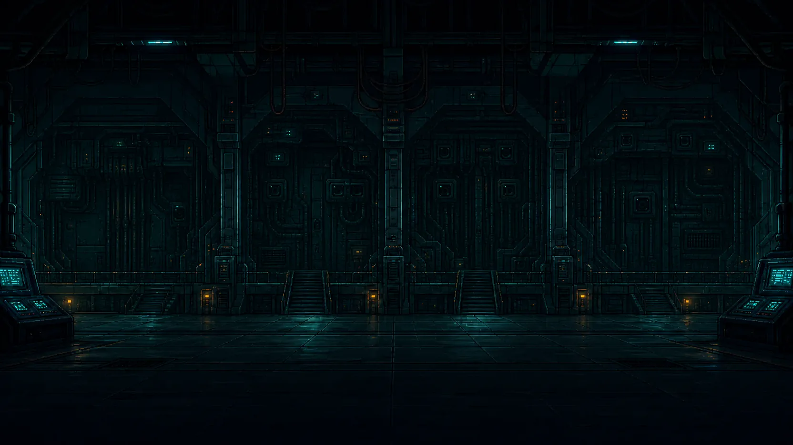

CH.05 · §2.1 NETWORK FOUNDATIONS
CHECKING
COURSE_CARD
0%
CURRENT KNOWLEDGE
CURRENT GOAL
GUIDE
REFERENCE
CONTEXT
HINT · H
COURSE MAP
NETWORK MODEL
NODES → LINKS → PATH → REASON
COURSE CARD
Network model hall offline